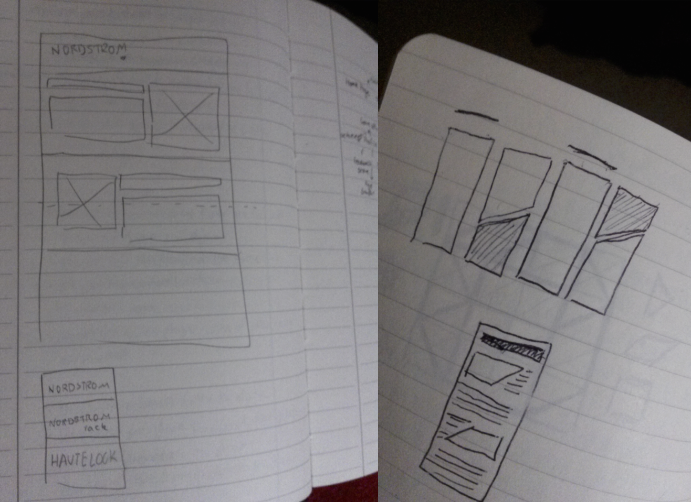
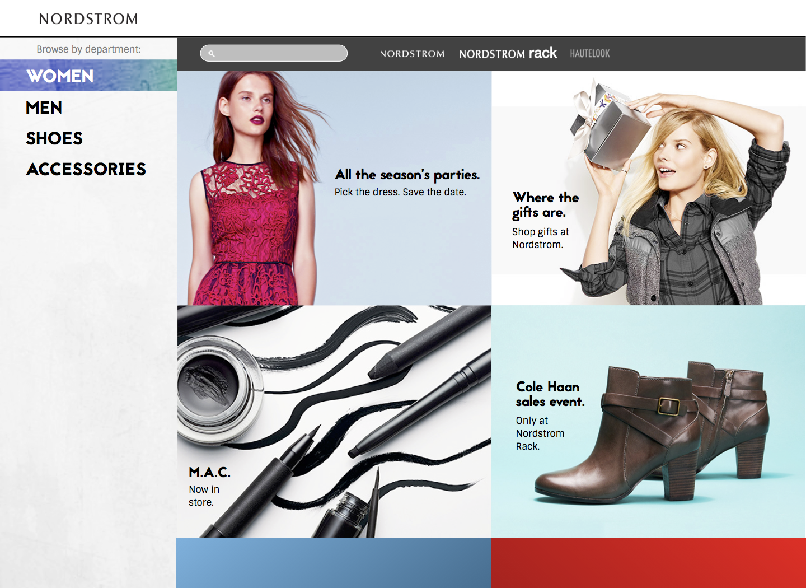
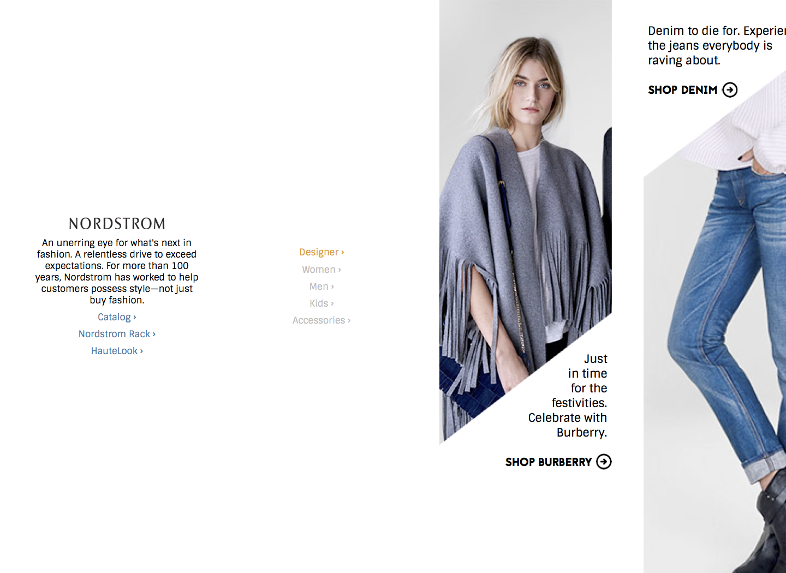

Created as part of the course HCDE 308 at the University of Washington.
Nordstrom is a powerful brand for fashion. And just like it is important for a fashion company to keep up with the latest clothing trends, it is important to keep up with modern web design as well.
The goal of this redesign was to give the offers on the home page their own space without clashing with each other as they do on the current home page. It also aimed to bring Nordstrom's other brands, Nordstrom Rack and HauteLook, to the forefront in order to cultivate mutual trust betwen their customers.
First, sketches were created in order to explore possible design directions for the website.

In the first iteration, the visual design of the site was updated with a colorful, "flat" look popular in current designs. Different offers were laid out on a similar structure on the webpage to make it easier for the viewer to scan. The user can view offers from all three of Nordstorm's brand on the same webpage, and their favorite departments are color-coded, so they can come back to them easily.

The second iteration uses a more minimalistic and experimental concept. It keeps the approach of keeping a similar structure with the offers on the page, but uses sharp angles to provide a sense of motion, guiding the user. Care was taken to keep the design familiar to existing users, by choosing typefaces reminiscent of the previous design.
